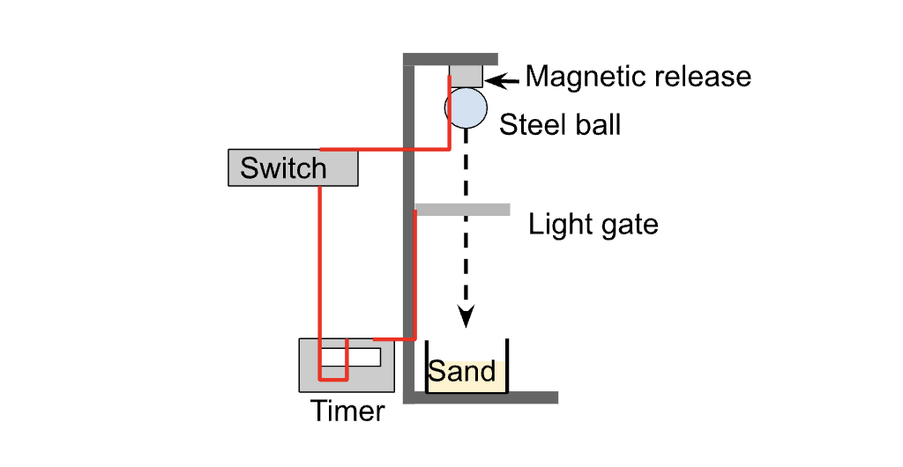

The Scientific Report#
Writing a Lab Report#
You will be writing scientific reports throughout your degree. At Level 1, you have a series of lab homeworks you need to complete and some of them involving writing different sections of a report. At the end of each semester you will also need to submit a full report based on one of your lab experiments.
Learning to write a good lab report takes time and practise. In order to get better at writing reports quickly, it is imperative that you spend time reviewing the feedback you recieve in the lab. Feedback is the most valubale thing that we can provide you with - if you do not review your feedback you will be unable to identify your areas for improvement and this will greatly impact your development.
The good news is that you will be given a lab report template for your level-1 reports, which you can (and should) use to structure your reports. It tells you what the main sections of a report are, and gives you tips about how to structure your reports. The original document can be found here and you may want to save a copy to edit when writing your own reports, but a breakdown of it is also provided below.
The Structure of a Lab Report#
Abstract#
An abstract is typically a single short paragraph that gives the most important details from your report:
Experiment: what was investigated?
Method: how? State specific technique.
Result: state numerical result +/- error and units.
Comparison with results in literature: compare to predictions or measurements from the literature
Limitations (if any): if needed, state any critical limitations of your investigation.
The trick to writng an abstract is to keep it super concise. It is not an introduction and no equations or graphics are needed. Each point above should be caputred by a single sentance or less.
Introduction#
Paragraph 1 should provide context for the work you are doing i.e what is the topic and why is it important. The first paragraph should:
include a topic sentence that starts by providing the broad context of the topic e.g. “Efficiency is an important feature of …”
Define any important terms “Thermal efficiency is the …”
Narrow the context towards the research area you have investigated e.g. “Measuring efficiency presents many challenges …”
Explain why is this research area is important.
State if this research has any uses or applications?
Identify the problem: “A better understanding of engine efficiency leads to better …”
Paragraph 2 should provide a literature review and identify a niche that needs filling. Here you will provide summary of previous methods and/or measurements by other scientists. The second paragraph should:
State key numerical values +/- errors (make sure to use references for these).
Mention key differences in methods or results.
Identify a gap in the literature e.g “While accurate, all these methods are expensive. There has been little work in a more accessible and economical method …”
Paragraph 3. should highlight your work in this paper and how it can fill the gap identified in the literature. You should
Clearly state the research question of your investigation e.g. “Here in this investigation, we aim to …”
Note the method or approach you used to answer your research question (do not go into too much detail here.)
Breifly state if there were there any novel features or findings.
Summarise the structure of the rest of this paper. “In Section 2, we discuss …”.
Theory#
After the introduction section, the theoretical details of your research question will be described here. While this is typically a short section at around half a page, you should aim to introduce the key physics as a theoretical model. The end of this section should make a theoretical prediction e.g. “Freefall time as a function of distance t(s) is predicted by Equation 1 to be a power law …”. This sets up the rest of your paper to show how your experiment tested this prediction. If this is a theoretical investigation then this Theory section will be larger and will build up the necessary layers of the physical model with many references throughout.
Paragraph 1 should:
Provide a general description of the physics relevant to your research question.
Paragraph 2 should:
Outline the theoretical principles using mathematical formulae. If this is an experimental article, detailed derivations of are not required. You should avoid showing trivial derivations of equations (if needed add derivations to an appendix).
List any assumptions used in the mathematical model.
Include appropriate references if needed (typically a good text book).
State what the prediction of the theoretical model is.
Equations can be inserted either inline if they are compact such as: \(E=mc^2\). Ensure that the variables are in italics.
In most cases you would like a numbered equation, which where the equation is centred on a separate line and an equation number is positioned on the right margin, for example:
The main advantage of a numbered equation is that it can be cross referenced in the text. For example, “ The free-fall time is described by Equation 1.” The equation can be cross referenced in subsequent sections, such as in the “Results and Analysis” section, without having to restate the equation.
Methods#
Paragraph 1 should:
Introduce and describe the basic concept of the method and how this can be used to answer your research question.
Paragraph 2 should describe the actual setup used:
Show a figure containing labelled diagram of setup.
Refer to diagram in text ( “… as shown in Figure 1.” )
State what main diagnostics were used (with model name) e.g. “the current was measured using a PhysTeX oscilliscope.”
Do not list every item!
State the key steps you used “The position of the detector was …”
Do not write a list of instructions as your methodology, instead write an account of what was actually done.

Figure 1: Experimental setup to measure freefall of a steel ball. The timer measures the fall time from the release switch until the ball passes through the light gate.
Paragraph 3 should highlight key errors and limitations:
A separate paragraph may be useful to explicitly state your estimates for reading errors “the resolution of the detector was …”. Also if you are aware of any systematic errors state these also. State other limitations such as alignment issues or difficulties in the setup. How were these problems minimised?
Analysis and Results#
Paragraph 1 should introduce and discuss the measured data:
State what was measured and how many sets of data were recorded
Was the data then processed in some way? Describe any calculations clearly.
Refer to the figure containing the graph with caption.
Describe the trend in the measured data.
Are any outliers present?
State that the error bars represent the error on the mean .
State range of statistical errors e.g. “ variation of 15% ..”
Comment briefly on any other issues with the measured data.

Figure 1: Measurements of free-fall for a steel sphere. A least squares fit of the data is also shown. The spheres had mass of 100g and initial velocity of zero. Error bars on the y-data are calculated using the standard error of the mean of repeat measurements. The x errorbars are too small to be seen.
Paragraph 2: After introducing the measured data, next describe the analysis methods. In most cases, this may be a linear correlation analysis. First describe what the goal of the analysis is and describe the method used:
Was a linearisation of the data or other processing required?
Was a least squares fit, a weighted (chi-squared) fit used?
Were the error bars of the measured data considered in the analysis?
Refer back to the figure stating that “this linear analysis is also shown in Fig. 1.”
Paragraph 3 is where you should state the analysis results:
What was the goodness of fit? (See correlation coefficient, r2, for linear fit or discuss reduced chi-sqaure.)
Did the fit produce a key parameter such as the slope or intercept?
State slope±error with units
State intercept±error with units
Ensure errors are rounded to 1 significant figure. Next ensure that both slope and intercept values are rounded to the same number of decimal places as their respective errors
Use the analysis results to calculate parameters of interest. This typically involves using the slope and it’s error value. For example, if the value of the slope (m) was being used to determine the acceleration due to gravity then \(g=m\) and the uncertainty or error on the value of \(g\) is the error on the slope, \(\Delta m\). given by:
In more complex cases involving multiple sources of errors, present a full error propagation here as per your lectures.
State the final result: “from this analysis a result of \(g=9.77 \pm 0.07\,\) m\(\,\)s\(^2\) was calculated.”.
Discussion and Conclusion#
Paragraph 1 is where you will interpret and discuss the analysis results:
What do the slope, intercept, r2 values mean?
Describe their physical significance.
Discuss the uncertainties/errors.
Were they large >10% or quite small ~1%?
What was the primary source of error?
Was there any sign of systematic errors such as a non-zero intercept?
Paragraph 2:
State again the overall result e.g. \( g = 9.77 \pm 0.07 \,m\,s^2\).
Is the result valid? How does it compare with theory?
Compare with other known or accepted data.
Find references to other published work if possible.
Keep your tone objective and critical with regards to your results.
Describe aspects that could be improved in the future. Try to be specific here. How would you redesign the experiment? Are there any examples in the published literature you could follow? Provide references and cite them numerically [1].
Paragraph 3: A short paragraph stating main results and limitations.
References#
It is important that you note where the information you used in your report came from and we do this using citations and a bibliograhy. Typically in a physics report we will place numerical citations e.g. “[1]” in the text where we have drawn upon information and then use an APA refernce style in our bibliography (list of sources). For example, take a look at the example of the biliography below:
[1] Surname, first initial, Title of article, Journal, Number, (Year)
[2] Laby & Kaye, Tables of physical and chemical constants, Longman (1995)
[3] National Physical Laboratory UK, Tables of physical and chemical constants,
www.kayelaby.npl.co.uk (2005)
[4] R. Bach et al, Controlled double-slit electron diffraction, New J. Phys. 15 033018 (2013)
Appendix: Error Analysis#
An appendix is an optional section for when you would like to include additional detail, for example, the derivation of theoretical results, a listing of a computer program or other bulky item that would break up the flow of the report.
In this case you can put an appendix including this detail at the end of the report and refer to it in the text. Do not put important graphs of results in an appendix. Your data are of prime importance and should appear in the main body of the text. Remember that an appendix is like a normal section and uses paragraphs to provide context! For example:
“In this case the main error on the value of g is the error on the slope given by:
which results \(\delta g = 0.7 m\, s^{2}\) and hence a 8% uncertainty on our final value of \(g\).”
If the uncertainty depends on multiple variables the simply use the quadrature formulae:
Language#
It is often the case that as students are so invested in the content of their lab report, that their choice of language and sentance structure may inadvertently take away from the clarity of their reporting. The way in which a report is written, for better or worse, is often the key factor that a reader will use to gauge the quality of the work. It is therefore key that we are able to write appropriately.
A report should be written:
Clearly - the report should be written in a way so that it is perfectly clear to the reader what was done and why. There should be no ambiguity in what is written. For example, when writing an account of how the data was collected and analysed, would somebody reading your report be able to repeat the experiment as you did it without having to make any assumptions about the proceedure you followed.
Concisely - the report should be written in a breif but comprehensive way. This is often very challenging for inexperienced report writers, but is something that develops naturally through practise. Essentially, we want to avoid using words unnecessarily so that the reader is able to efficiently extract information without comprimising the clarity of what is written. This is often achieved by restructuring sentences after proof reading the ideas you have put onto the page. Writing concisely and using shorter sentences also makes the report more engaging to read.
In a passive voice - it is best practise to write a report neither in the first nor second person e.g. “I measured the mass of the shotput” or “we recorded the temperature of the object”. Instead the report should be written as if you were an objective observer floating above the experiment as it was performed i.e. “the mass of the shotput was measured” or “the temperature of the object was recorded”. As a report is an account of what was done, it should be written in the past tense.
Formally - a lab report is a formal reference document and should be written as such. You should avoid using slang and contractions (Do not use “don’t”). At the same time, it is important that you do not write too formally or superfluously (arguably the use of “superfluously” was a little superfluous of me).
Tip
The easiest way to improve your lab report before you even submit it is to thoroughly proofread it. It sounds obvious, but when we reread what we have written we often scan through it and assume it reads as we intended it to when writing. The reality is that often we type faster than we think and the quality of our commuinication suffers as a result.
Taking time to carefully proofread will give you the opportunity to spot typos and consider if you have structured your writing as clearly and concisely as you intended.
Flow of ideas#
In a lab report, your ideas should follow each other logically. This will help your reader make sense of what you are trying to tell them and it also means you are not jumping from one idea to the next without introducing them. A simple way to achieve this is to, repeat an idea or phrase at the beginning of the following sentance. Take a look at the following paragraph and try to identify how ideas flow throughout it:
“Biting flies are serious pests of livestock [13–15] and previous studies have reported that biting flies affect the behavior of cattle and cause economic losses [16–18]. In fact, biting flies reduce grazing, feeding, and bedding down time of cattle and increase fly-repelling behaviors (e.g. head throwing, foot stamping, skin twitching, and tail flicking) and bunching behaviors of cattle [15, 18]. Bunching increases heat stress and risk of injury as animals jostle for a better position to avoid biting flies, and this can reduce weight gains in feedlot beef cattle and milk yield in dairy cows [15, 17, 18].”
Topic Sentences
These are sentences that appear in all paragraphs and usually the first sentence of a paragraph. They tell the reader what that paragraph is about and often indicate where the paragraph fits into the whole report. By reading just the topic sentences of a report, you should be able to see the flowing narrative built by the writer which to helps link ideas and improve the readability of the report.
Verb tenses#
A verb is a type of word expressing an action; it tells us what the subject of our sentence is doing.
Past tense:
Describe stuff you did in the past (method you used, results you obtained, analysis you did)
Describe what other people did in the past that was applicable at that point in time (e.g. physicists believed atomic nuclei were made entirely out of protons)
Present tense:
Use it when you are talking about general concepts, established knowledge and stuff that is still considered true (“Gravity is one of the four fundamental forces of nature”).
To talk about the results of previous research provided they still hold true (“research shows that…”
Future tense:
When you’re talking about future work (“Future studies will be required to understand this phenomenon” - note here you could just as well say “future studies are required”).
When indicating possible projections or consequences (“It seems plausible to assume that temperatures will continue to rise”).
Additional Resources
You may wish to also reivew the York Academic Writing Style Guide.
Activities#
A Changed Perspective#
Take a look at the document you made earlier that highlights the different sections you identified in the literature.
Did you correctly identify the different parts outlined in the report template above?
Where you missed features outlined in the report template above, now go back and identify where these are in a your chosen example of literature. I would recommend highlighting each component.
Rewrite#
The phrases below can be written more suitibly for a lab report. Have a go to try and get used to a writing formally in the passive voice, and with the features you would want included in the report.
“We used a ruler to micrometer to measure the thickness of the wire because the gaps on a ruler aren’t small enough.”
“You should use a multimeter to measure the current.”
“The line of best fit looks good for the data.”
“I think to improve the experiment a light gate would be better for seeing how long it takes for the mass to fall as I was not always fast enough when using the stop watch.”
Example Rewrite (1).
The thickness of the wire was measured using a micrometer with a precision of 0.01 mm after it was noted that a standard ruler did not have a suitible resolution.